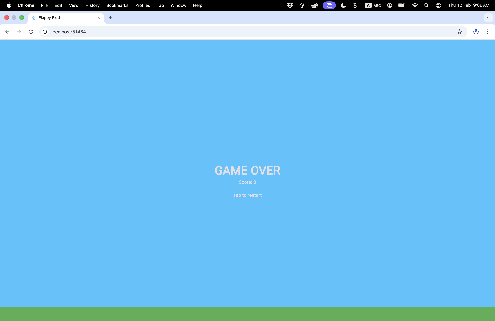

| ChatGPT |
Brand: 8/10
Gameplay: 10/10
Graphics: 9/10
|
prompt |
ChatGPT prompt
Response

Notes
The ChatGPT response does not guide you to create a Flutter project and then add/edit the code.
As a result, the project does not launch after you follow the instructions: flutter pub get and flutter run.
After manually creating the project, and copying the files over, the project launches as a Web app.
The resulting project is not functional: the player loses as soon as the game starts, with no opportunity for reacting.
|
Claude prompt
|
DeepSeek prompt
|
Gemini prompt
|
Meta Llama prompt
|
|